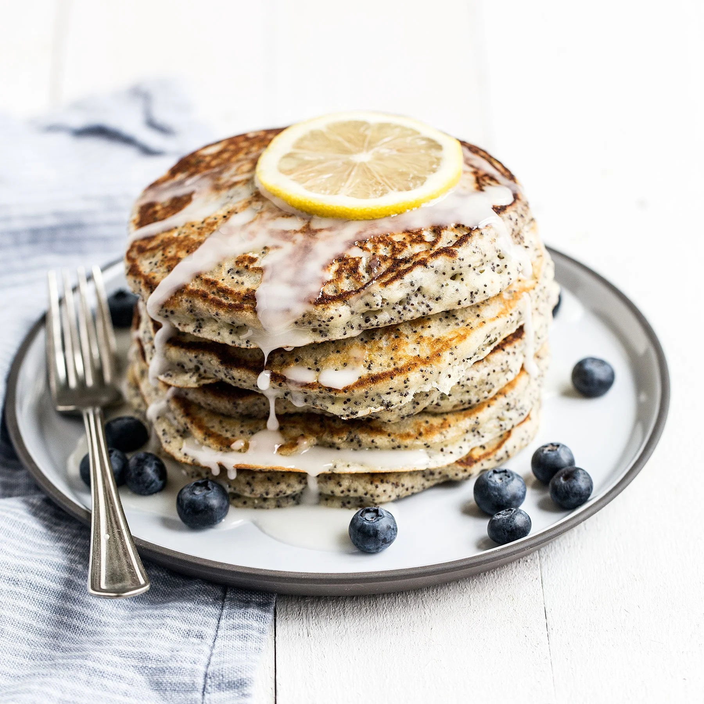

Poppy Seed Pancakes

Tasty Pancakes with a zesty touch
I used to make those pancakes when I was living in my old flat in Berlin.
They're a bit more sophisticated than the plain ones and taste really great
with cream cheese.
It's a really simple recipe and you don't need much to get a really tasty
breakfast out of it.
Ingredients
- Baking Powder
- Eggs
- Poppy Seeds
- Lemon Zest
- Flour
- Milk
Steps
- Mix the milk with the baking powder and the flour.
- Add the eggs.
- Add the poppy seeds and the lemon zest.
- Bring a pan to medium heat and add some butter.
- Add a spoonful of the hot batter to the pan and bake the pancakes.
- You can garnish the pancakes with more lemon zest and berries.
Back home